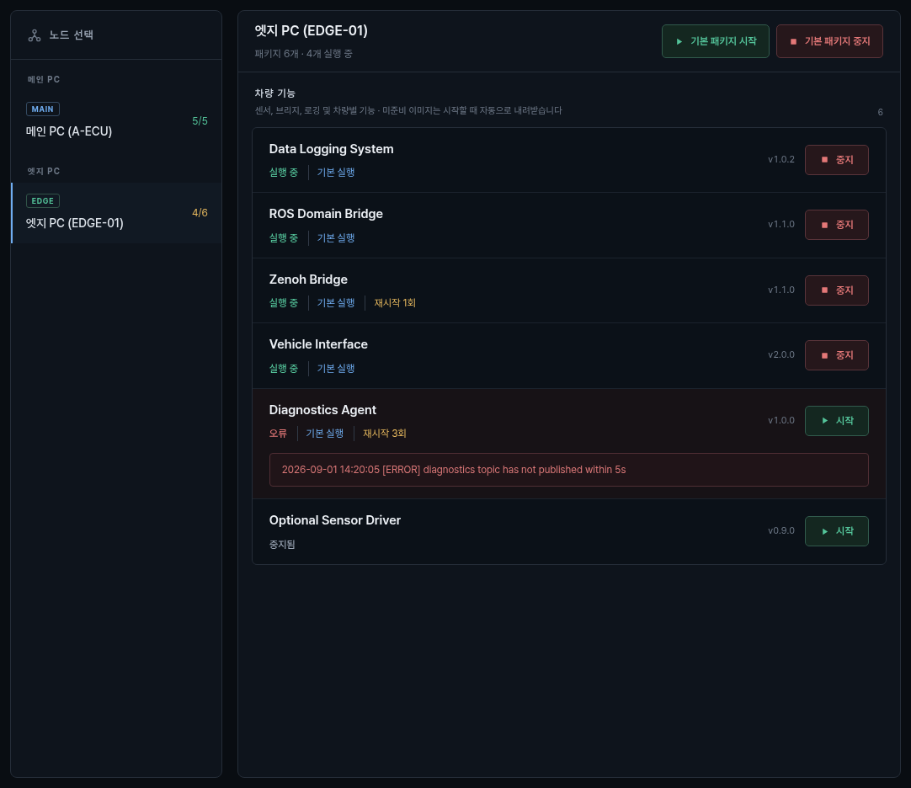
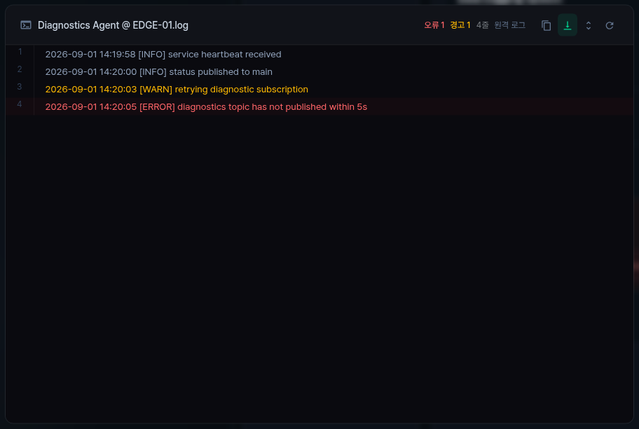

📦 Package Manager 사용 가이드¶
Package Manager는 main과 edge에 설치된 package의 실행 상태, 기본 실행 여부, 재시작 횟수와 로그를 한 화면에서
확인하고 시작·중지 명령을 보내는 공통 package lifecycle 화면입니다. Furive OS 하단의 서비스 앱이
Package Manager 화면이며, 각 package가 자체 재시작·다른 package 제어를 구현하지 않도록 lifecycle을 한 곳에서
소유합니다.
운영 화면 상단의 전체 운용 상태를 누르면 main과 연결된 PC의 문제를 한 목록에서 확인합니다.
각 항목은 PC, 패키지, 보고된 원인을 표시하며 로그 보기로 해당 패키지 로그를 엽니다.
furive status와 furive status --json도 같은 집계 기준을 사용합니다.
전체 집계는 main에서 확인하며, main 상태를 받지 못하는 PC에서는 확인 불가로 표시합니다.
오류·비정상 종료·컨테이너 누락은 이상, 시작 대기와 기본 실행 패키지 중지는 확인 필요입니다. 미사용·실행 관리 제외 패키지는 문제로 세지 않습니다. main 상태가 15초, PC heartbeat가 30초를 넘으면 과거 정상 상태를 재사용하지 않고 확인 불가로 표시합니다. 복구하면 다음 상태 갱신에 목록에서 사라집니다. 집계 대상은 현재 수신한 패키지 실행 상태, PC 연결과 호스트 복구 요구이며, 패키지 내부의 상세 진단과 과거 장애 이력은 각 패키지 화면·로그에서 확인합니다.
대상 차량 운용·정비 담당자
시작 위치 서비스 화면 또는 CLI
완료 기준 문제 패키지·상태·로그 확인
1. 시작과 진입¶
설치 묶음의 ./bootstrap.sh를 완료하면 역할, 차량과 package 조합은 설치 상태에 저장되고 Furive OS가
자동으로 시작합니다. 하단 서비스를 선택하면 Package Manager가 열립니다. 설치 뒤 일반 운용에서 main이나
edge를 다시 입력하지 않습니다.
화면이 열리지 않거나 상태가 멈춘 경우 다음 공개 명령으로 공통 상태부터 확인합니다.
⌨️ CLI로 같은 작업하기¶
| 확인·작업 | 명령 |
|---|---|
| 관리 중인 패키지 상태 | furive package status |
| 패키지 하나 시작 | furive package start <name> |
| 최근 로그 200줄 | furive package logs <name> --lines 200 |
활용 팁
서비스가 실행 중인 일반 운용에서는 package start를 사용합니다.
package run은 서비스가 중지된 환경의 전경 실행입니다.
대상 PC 선택과 전체 옵션은 패키지 명령어 표를 확인하세요.
패키지만 전경 실행하기¶
설치된 deploy에서도 다음 명령으로 패키지를 조회하고 필요한 프로그램만 전경 실행합니다.
이 경로는 전체 Furive OS 서비스가 중지된 환경에서 사용합니다. 서비스가 이미 실행 중이면
furive package start <name> 또는 서비스 화면에서 해당 패키지를 개별 시작·중지합니다. 중복 실행을 위해 서비스를 자동으로 중지하지 않습니다.
설치된 PC 역할을 자동으로 사용하고, 선택한 패키지와 manifest의 필수 의존성만 시작합니다.
Ctrl+C로 이번 실행을 종료합니다. DLS 예시는 해당 패키지가 설치된 edge에서 사용합니다.
deploy checkout 루트에서는 ./furive package run <name>도 사용할 수 있습니다.
설치된 이미지·장치·runtime asset은 그대로 필요하며, 이 명령이 별도 설치를 대신하지 않습니다.
이는 Furive OS의 실행 관리자를 이용한 개별 실행입니다. Furive OS 없이 프로그램 자체를 실행하는 방법은 해당 독립 저장소가 소유합니다. 패키지 본체의 단독 기능을 Furive OS 연결에 종속시키지 않습니다.
독립 package를 source checkout에 추가하고 검사하는 개발 작업은 다음과 같습니다.
2. 먼저 지킬 안전 원칙¶
주의
시작·중지는 해당 package의 실제 process, container 또는 원격 edge 명령에 연결됩니다. 센서, 차량 제어, 기록, bridge package를 화면 확인 목적으로 중지하지 않습니다.
- package가 소유한 작업을 먼저 정상 종료합니다. DLS는 녹화·재생·전송을 끝낸 뒤 중지합니다.
- Launcher, bridge, 차량 interface 중지는 주행 종료와 물리 안전 확인 뒤 수행합니다.
- 버튼을 누른 뒤 상태가 수렴할 때까지 기다립니다. 응답 지연 중 반복 입력하지 않습니다.
실행 중은 process health 기준이며 package의 실제 기능과 입력 데이터 정상까지 보증하지 않습니다.- 오류 package만 조사할 때 공통 service 전체를 재시작하지 않습니다. 먼저 해당 행의 로그와 소유 경계를 봅니다.
3. MAIN 화면 읽기¶

노드 선택: MAIN과 연결된 edge를 구분하고 각 노드의 실행 중/전체 package 수를 표시합니다.- 선택 노드 요약: package 총수와 실행 중 수를 보여 줍니다.
기본 패키지 시작·중지:default_start: true인 package만 일괄 대상으로 삼습니다.코어 서비스: Dashboard, Launcher, OTA Updater, System Manager 같은 공통 운영 구성입니다.- package 행: 사용자 label, 상태, 기본 실행, 재시작 횟수와 version을 표시합니다.
- 행 오른쪽 버튼: 실행 중이면
중지, 정지·오류 상태면시작을 표시합니다.
MAIN의 Package Manager가 상태를 표시한다고 각 lifecycle을 대신 소유하는 것은 아닙니다. 예를 들어 Launcher 행은 Launcher package process를 감독하고, Autoware 맵·실행·빌드는 Launcher 화면에서 처리합니다. OTA 행은 updater process를 감독하고 업데이트 목표·복구는 OTA Updater가 처리합니다.
4. EDGE 화면과 상태 구분¶

edge를 선택하면 main이 마지막으로 받은 telemetry를 기준으로 설치 package를 표시합니다.
| 표시 | 의미 | 운용 판단 |
|---|---|---|
| 실행 중 | process 또는 container health가 정상 | 실제 센서·topic·기능도 별도 확인 |
| 시작 중 | 시작 명령 후 상태 전환 중 | 완료 또는 오류까지 기다림 |
| 중지됨 | 관리 대상이 현재 실행되지 않음 | 필요한 package인지 확인 후 시작 |
| 비활성 | 설정상 실행 대상이 아님 | 임의 활성화 전에 플랫폼 구성 확인 |
| 미설치 | 실행 산출물이 없음 | 설치·image·manifest 상태 조사 |
| 오류/크래시 | health 또는 process 종료 이상 | 행 오류와 로그의 첫 원인 확인 |
| 위임됨 | 다른 노드 또는 owner가 실제 실행을 담당 | 표시된 위임 대상을 확인 |
기본 실행은 설치 시 자동 시작 대상으로 선택됐다는 뜻입니다. 재시작 N회가 증가하면 현재 녹색이어도 원인을
확인합니다. 짧은 시간 반복 재시작은 간헐 오류가 아니라 지속 장애일 수 있습니다.
edge가 등록됐지만 heartbeat가 없으면 package 목록 대신 상태 보고 대기가 나타날 수 있습니다. 이때는 시작
버튼보다 main↔edge 연결, node certificate, 시간과 TCP :15001 상태를 먼저 확인합니다.
5. 개별 시작·중지¶
개별 package는 다음 순서로 조작합니다.
- 올바른 MAIN 또는 edge가 선택됐는지 확인합니다.
- package label과 version을 확인합니다.
- 시작 전에 의존 package, 장치, network와 저장 공간을 확인합니다.
시작또는중지를 한 번 누릅니다.- 버튼의 진행 표시와 행 상태가 목표 상태로 수렴하는지 확인합니다.
- 행을 눌러 로그에서 새 실행의 시작 시각과 첫 오류를 확인합니다.
- 실제 기능의 입력·출력을 해당 시스템 화면에서 확인합니다.
원격 edge 명령은 전송 성공 뒤 edge 응답과 후속 telemetry가 와야 완료로 판단합니다. 명령 전송됨만으로
package 실행을 확정하지 않습니다.
6. 기본 package 일괄 제어¶
기본 패키지 시작과 기본 패키지 중지는 선택 노드에서 default_start: true로 표시된 항목을 각각 호출합니다.
정상 부팅 때는 설치가 자동 시작하므로 일괄 시작을 온보딩 단계로 사용하지 않습니다.
일괄 중지는 다음 조건에서만 사용합니다.
- 차량이 정지했고 자율주행 제어가 종료됐다.
- 모든 녹화·재생·전송과 장치 작업을 정상 종료했다.
- 어떤 package가 함께 중지되는지 화면에서 확인했다.
- 정비 또는 계획된 종료 절차가 이를 요구한다.
일부 항목만 재시작할 목적이라면 개별 행을 사용합니다. 기본 package 일괄 중지와 공통
furive service stop은 범위가 다르므로 섞어 쓰지 않습니다.
7. 로그 읽기¶

package 행의 본문을 누르면 로그 창이 열립니다.
- 제목은
package label @ node.log로 현재 대상 노드를 표시합니다. - 오류·경고 건수는 현재 가져온 줄에서 분류한 수입니다.
원격 로그는 edge에서 전달된 결과,로컬 로그는 MAIN에서 읽은 결과입니다.- 복사, 자동 스크롤, 확대/축소와 새로고침은 로그 표시만 바꿉니다.
- 빨간 줄 하나만 보지 말고 그 앞의 초기화·연결·재시도 순서를 함께 읽습니다.
로그가 비어 있으면 package가 정상이라는 뜻이 아닙니다. 아직 시작하지 않았거나, edge telemetry가 없거나, log source를 열지 못했을 수 있습니다. node, 상태, 시작 시각과 API 오류를 함께 확인합니다.
8. 장애 범위 좁히기¶
| 증상 | 먼저 확인 | 다음 조치 | 하지 않을 것 |
|---|---|---|---|
| 노드가 목록에 없음 | 설치 역할·차량 등록 | main/edge status와 등록 로그 | config 값을 여러 파일에 복제 |
| 상태 보고 대기 | heartbeat, node 시간, network | TCP 15001 mTLS 로그 확인 | 시작 버튼 반복 |
| 시작 중 지속 | 행 로그, image 준비, health | 첫 실패 원인 해결 | process 이름으로 강제 종료 |
| 오류 뒤 재시작 증가 | 첫 오류와 restart 간격 | 장치·config·의존성 조사 | 정상 색으로 돌아왔다고 무시 |
| 미설치 | package manifest와 산출물 | 설치 또는 image 준비 경로 확인 | 임의 파일을 package 폴더에 복사 |
| 원격 명령 실패 | edge 연결·권한·응답 ID | control plane 복구 뒤 재시도 | 다른 edge에 같은 명령 전송 |
| 로그 조회 실패 | 대상 노드와 package 이름 | service 로그로 API 경계 확인 | wildcard로 파일 삭제 |
9. Package 계약과 개발 경계¶
일반 script package는 name, version과 run.sh로 시작하고, Docker·MAIN 실행·장치·의존성처럼 기본값과
다른 요구만 manifest에 추가합니다. Package Manager는 다음 공통 계약을 제공합니다.
- 발견과 normalized 이름 중복 확인
- 실행·중지와 process/container health
- default start와 재시작 상태
- MAIN/edge 명령 전달과 응답
- 공통 로그 조회와 OTA lifecycle 연계
package마다 자체 재시작 loop, OTA, log rotation 또는 다른 package 제어를 만들지 않습니다. 새 독립 package는 다음 공개 경로로 통합하고 작은 시험 뒤 전체 검증을 수행합니다.
10. Furive OS 연계 구조¶

Dashboard는 Package Manager의 상태를 화면에 맞게 표시하고 입력을 전달합니다. lifecycle 단일 소유자는
core/package_manager.py이며, Launcher·OTA 같은 별도 owner의 내부 정책을 Dashboard에 복제하지 않습니다.
MAIN과 edge의 package 상태·명령은 UTF-8 JSON object stream over TCP :15001에서 TLS 1.3 mutual TLS로
전달됩니다. ROS topic data는 이 control plane이 아니라 ROS Domain Bridge와 Zenoh over QUIC/UDP :7447,
TLS 1.3 mTLS 경로를 사용합니다. package가 실행 중이어도 ROS data plane은 별도로 끊길 수 있습니다.
11. 운용 체크리스트¶
조작 전:
- 올바른 노드와 package를 선택했다.
- 주행·기록·전송·장치 작업을 정상 종료했다.
- 의존 package와 실제 장치 상태를 확인했다.
조작 후:
- 상태가 목표 상태로 수렴했다.
- restart count가 예상치 않게 증가하지 않았다.
- 새 로그와 실제 기능 결과를 확인했다.
- edge 명령은 응답과 후속 telemetry까지 확인했다.